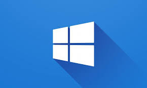

Acerca de

Windows 10
Es el actual sistema operativo desarrollado por Microsoft como parte de la familia de sistemas operativos Windows NT. Fue dado a conocer oficialmente en septiembre de 2014, seguido por una breve presentación de demostración en la conferencia Build 2014.